Plain language summary
Review question. In preterm and low birth weight babies who are clinically stable, is it better to give the full daily volume of milk by mouth or feeding tube from the first day of life — with no drip and no intravenous nutrition — than to start with small "trophic" feeds and build them up slowly while a drip supplies the rest of the fluid and nutrition?
Why this matters. The conventional approach exposes an infant to an intravenous line for days or weeks. Lines carry infection and thrombosis risk, parenteral nutrition is expensive and needs pharmacy support, and slow feed advancement delays the point at which the gut is doing all the work. Against that, clinicians have long feared that filling an immature gut quickly might provoke necrotising enterocolitis — a destructive bowel disease that kills a substantial proportion of the infants who develop it. That fear is the reason gradual feeding became standard, and it is what this review tests.
What we found. We included 12 randomised trials with 3,202 infants. Compared with gradual feeding plus intravenous support, early full enteral feeding:
- did not increase necrotising enterocolitis (risk ratio 0.84, 95% CI 0.41 to 1.71) or death before discharge (risk ratio 1.03, 95% CI 0.68 to 1.54), though both estimates remain too imprecise to rule out a clinically important difference in either direction;
- reduced feed intolerance (risk ratio 0.72, 95% CI 0.54 to 0.95) — about 73 fewer infants per 1,000;
- got infants to full feeds about 2.3 days sooner and out of hospital about 3.9 days sooner, although these estimates vary a great deal between trials;
- showed a reduction in bloodstream infection that was not statistically significant overall (risk ratio 0.63, 95% CI 0.35 to 1.15) but was clear-cut in trials from lower- and middle-income settings and absent in high-income settings.
How confident are we? Certainty is low for mortality and feed intolerance and very low for the other six outcomes. Half the trials were at high risk of bias, the largest trial dominates several analyses, and the trials disagree considerably about the size of the benefits. The direction of the safety findings is reassuring but the evidence is not strong enough to be definitive on necrotising enterocolitis, which is the outcome clinicians most want certainty about.
Bottom line. For stable preterm infants above roughly 1,000 g, feeding fully from day one appears to shorten the path to full enteral nutrition and reduce feed intolerance without a demonstrated increase in necrotising enterocolitis or death. The safety evidence is compatible with anything from a 59% relative reduction to a 71% relative increase in necrotising enterocolitis, so the practice is best regarded as reasonable rather than established, and the evidence base for infants below 1,000 g is effectively absent.
Abstract
Background. Standard practice for preterm infants is to begin minimal enteral ("trophic") feeds and advance them incrementally while intravenous fluids and parenteral nutrition supply the remaining requirement. Early exclusive — or total — enteral feeding instead delivers the full daily fluid and nutrient volume enterally from day one, avoiding intravenous access altogether. The trade-off between avoiding line-related complications and the theoretical risk of provoking necrotising enterocolitis has not been quantified in a synthesis restricted to this specific contrast.
Objectives. To assess the effects of early exclusive (total) enteral feeding, compared with gradual enteral feeding supplemented by intravenous fluids or parenteral nutrition, on necrotising enterocolitis, mortality, infection, feeding progression and growth in preterm and low birth weight infants.
Search methods. MEDLINE/PubMed was searched through nine complementary strands from inception to 2026, together with ClinicalTrials.gov, with backward and forward citation tracking of all included reports. The last search was run in 2026.
Selection criteria. Randomised or quasi-randomised trials in preterm or low birth weight infants comparing an intervention arm receiving the full enteral volume from the first day of life without routine intravenous fluid or parenteral nutrition against a comparator arm receiving lower-volume enteral feeds with intravenous fluid or parenteral support. Trials randomising only the rate of enteral advancement, or only the timing of feed onset with parenteral support in both arms, were excluded.
Data collection and analysis. Two extraction passes were made from published full texts, with the numbered results tables taking precedence over abstracts wherever the two disagreed. Every extracted cell carries a source field naming the table, page or figure it came from. Outcomes reported only as medians with ranges or interquartile ranges were tabulated as reported and not converted to means and standard deviations. Risk of bias was assessed with the Cochrane RoB 2 domains. Dichotomous outcomes were pooled as Mantel-Haenszel risk ratios and continuous outcomes as mean differences, both under a DerSimonian-Laird random-effects model. Certainty was rated with GRADE.
Main results. Twelve trials (3,202 infants) were included; all 12 contribute to at least one pooled analysis. Six trials were at high overall risk of bias, three at some concerns and three at low risk. Early exclusive enteral feeding did not change the risk of necrotising enterocolitis (8 trials, 3,160 infants; RR 0.84, 95% CI 0.41 to 1.71; I² = 2%; very low certainty) or all-cause mortality before discharge (6 trials, 2,701 infants; RR 1.03, 95% CI 0.68 to 1.54; I² = 0%; low certainty). It reduced feed intolerance (10 trials, 1,101 infants; RR 0.72, 95% CI 0.54 to 0.95; I² = 28%; low certainty), shortened time to full enteral feeds (5 trials, 2,577 infants; MD −2.30 days, 95% CI −3.47 to −1.14; I² = 90%; very low certainty), shortened hospital stay (7 trials, 2,506 infants; MD −3.94 days, 95% CI −6.40 to −1.49; I² = 90%; very low certainty) and shortened time to regain birth weight (5 trials, 347 infants; MD −2.82 days, 95% CI −5.12 to −0.53; I² = 94%; very low certainty). Culture-positive late-onset sepsis was not significantly reduced overall (8 trials, 2,917 infants; RR 0.63, 95% CI 0.35 to 1.15; I² = 50%; very low certainty), but the setting subgroup difference was significant (p = 0.011): RR 0.37 (95% CI 0.16 to 0.87) in lower- and middle-income settings versus RR 1.33 (95% CI 0.80 to 2.20) in high-income settings. Hypoglycaemia was not increased (6 trials, 534 infants; RR 0.80, 95% CI 0.37 to 1.75; very low certainty), although this estimate reversed direction when trials at high risk of bias were excluded.
Conclusions. In stable preterm infants, predominantly above 1,000 g, early exclusive enteral feeding shortens the path to full enteral nutrition, reduces feed intolerance and shortens hospital stay, with no demonstrated increase in necrotising enterocolitis or death. Certainty is low to very low throughout, and the confidence interval for necrotising enterocolitis remains wide enough to include appreciable harm. The single large multicentre trial and the trials from lower-income settings give systematically different answers for infection and length of stay, which limits transportability of the pooled estimates. Adequately powered trials in infants below 1,000 g are the principal remaining gap.
Background
Description of the condition
Preterm infants are born with a gut that is anatomically complete but functionally immature. Coordinated migrating motor complexes appear only towards term, gastric emptying is slow, digestive enzyme activity is low, and the mucosal barrier is permeable. Superimposed on this is the circulatory adaptation of the first postnatal days, during which mesenteric perfusion is labile. The result is that a substantial proportion of preterm infants show clinical signs read as feed intolerance — increased gastric residuals, abdominal distension, emesis — and a minority progress to necrotising enterocolitis, a fulminant inflammatory necrosis of the bowel with a case fatality of roughly 20 to 30% and a high rate of long-term neurodevelopmental and gastrointestinal sequelae among survivors.
Because necrotising enterocolitis is so feared and so hard to predict, feeding practice in neonatology has been organised around avoiding it. The resulting convention — begin with minimal enteral or "trophic" volumes for the priming benefit, advance in small daily increments, and meet the remaining fluid and nutrient requirement intravenously — has been standard in most units for decades.
Description of the intervention
Early exclusive enteral feeding, also called early total enteral feeding or full milk feeding from day one, inverts that convention. The full daily fluid volume for the infant's postnatal day — typically 60 to 80 mL/kg on day one — is given enterally from the first feed, divided into two- or three-hourly boluses of maternal or donor human milk, and no peripheral line is sited and no parenteral nutrition given unless the infant becomes unwell. Advancement thereafter follows the unit's usual daily increments to full feeds.
The rationale is threefold. Enteral nutrients are the physiological trophic stimulus for gut mucosal growth, motility maturation and microbial colonisation, and withholding them may prolong the very immaturity that gradual feeding is designed to accommodate. Second, the intravenous line that gradual feeding requires is itself a hazard: central and peripheral lines are the principal portal for late-onset bloodstream infection, and parenteral nutrition is independently associated with cholestasis. Third, in resource-limited settings parenteral nutrition may be unavailable, intermittently available, or compounded under conditions that add rather than subtract risk — so an approach that avoids it has value beyond the physiological argument.
How the intervention might work
Two mechanisms are proposed for benefit. Larger early enteral volumes deliver more substrate to enterocytes and more stimulus to enteric neural and hormonal circuits, potentially accelerating the maturation of motility and absorption and so shortening the interval to full feeds. And avoiding intravenous access removes the dominant route of nosocomial bacteraemia, which should reduce culture-positive late-onset sepsis, an effect whose magnitude will depend on the baseline infection rate and line-care standards of the unit.
The mechanism proposed for harm is more direct. A volume load delivered to a hypoperfused, immature gut may exceed its absorptive and motor capacity, producing luminal stasis, bacterial overgrowth and mucosal injury — the classical model of necrotising enterocolitis pathogenesis. If this mechanism operates at the volumes used in these trials, the harm would fall on the outcome clinicians least want to trade.
Why it is important to do this review
Existing Cochrane reviews of neonatal feeding address adjacent but distinct questions: the rate at which enteral feeds are advanced, the timing of feed initiation, and whether trophic feeding should be given at all during a period of parenteral support. In each of those comparisons both arms receive parenteral or intravenous support. The contrast examined here — full enteral volume with no parenteral support versus graded enteral volume with it — is a different intervention, and the trials testing it have accumulated only over the last decade. The completion of a large multicentre trial in a high-income setting alongside a body of smaller trials from lower- and middle-income settings makes a synthesis both possible and necessary, particularly since those two bodies of evidence may not be answering the same practical question.
Objectives
To assess the benefits and harms of early exclusive (total) enteral feeding, compared with gradual enteral feeding supplemented by intravenous fluids or parenteral nutrition, in preterm and low birth weight infants, and to examine whether effects differ by setting or by trial risk of bias.
Methods
Criteria for considering studies for this review
Types of studies. Randomised and quasi-randomised controlled trials. Cluster-randomised and cross-over designs were eligible in principle but none were identified. Conference abstracts without extractable arm-level data were not eligible for the syntheses.
Types of participants. Preterm infants (< 37 weeks' gestation) or low birth weight infants (< 2,500 g), enrolled in the first days of life.
Types of interventions. The intervention arm had to receive the full age-appropriate enteral fluid volume from the first day of life, with no routine intravenous fluid or parenteral nutrition. The comparator arm had to receive lower-volume enteral feeds — trophic, minimal enteral, or conventional graded feeds — with intravenous fluid or parenteral nutrition supplying the remainder.
Two trial families were deliberately excluded because they answer different questions. Trials randomising the rate of enteral advancement while both arms receive parenteral support test how fast to climb, not whether to avoid the drip. Trials randomising the timing of feed onset — early versus delayed first feed — with parenteral support in both arms test when to start. Both are the subject of separate reviews, and conflating them with the present contrast would mix interventions with different mechanisms and different comparators.
Types of outcome measures. The primary outcomes were necrotising enterocolitis (Bell stage ≥ 2) and all-cause mortality before discharge. Secondary outcomes were culture-positive late-onset sepsis, feed intolerance as defined by each trial, hypoglycaemia, time to attain full enteral feeds, duration of hospital stay and time to regain birth weight.
Search methods for identification of studies
MEDLINE via PubMed was searched from inception to 2026 through nine complementary strands combining preterm and low birth weight population terms with intervention terms for total, full and exclusive enteral feeding, and with terms for the avoidance of parenteral nutrition and intravenous fluids. ClinicalTrials.gov was searched across four condition-by-intervention combinations. All included reports underwent backward citation tracking through their reference lists and forward tracking through PubMed's related-citation and cited-by links. The full Boolean strings, per-strand yields and search dates are recorded in the search strategy document accompanying this review.
Declared deviations from Cochrane standard. Two aspects of the search and screening fall short of a full Cochrane search and are declared here rather than buried in a limitations paragraph. First, CENTRAL, Embase, CINAHL and regional databases including LILACS and IMSEAR were not reachable from the environment in which this review was produced; the search is therefore MEDLINE-based plus register and targeted citation recovery. Trials indexed only in Embase or in regional databases — a real possibility for this literature, which is substantially South Asian — may have been missed. Second, screening was single-reviewer with machine assistance (a lexical prefilter followed by structured classification of each abstract, with adjudication of every borderline record) rather than dual independent screening. Both deviations are recorded in the protocol.
Data collection and analysis
Selection of studies. Records were screened on title and abstract against the eligibility criteria, with every excluded record assigned a coded exclusion reason. Records surviving screening were assessed at full text. The complete screening log with per-record decisions and reasons, and the table of studies excluded at full text with PMIDs and stated grounds, accompany this review.
Data extraction and management. Arm-level data were extracted from published full texts. Where an abstract and the paper's numbered results tables disagreed, the tables were taken as authoritative and the discrepancy recorded. Every extracted cell carries a source field naming the specific table, page or figure it was taken from, so that any value in the analysis can be traced to its origin in the source paper.
Handling of outcomes reported as medians. Outcomes reported only as medians with ranges or interquartile ranges, or as means without any dispersion measure, were tabulated exactly as reported and not converted to means and standard deviations. Conversion formulae assume approximate symmetry, and the distributions here — time to full feeds, length of stay — are right-skewed by construction, so conversion would manufacture precision that the source data do not support. Nineteen study-outcome cells from eight trials are affected; they sit outside the pooled syntheses and are reported in full in a separate non-poolable data table. This is a conservative choice that costs statistical power, and it means several pooled continuous analyses rest on fewer trials than reported the outcome.
Post-randomisation subsets. Outcomes reported only among the subset of infants who actually received a given intervention component — rather than among all infants randomised — were treated as post-randomisation subsets, not intention-to-treat contrasts, and logged as non-poolable with the reason recorded.
Assessment of risk of bias. Each trial was assessed across the five Cochrane RoB 2 domains: the randomisation process, deviations from intended interventions, missing outcome data, measurement of the outcome, and selection of the reported result, with an overall judgement of low risk, some concerns or high risk. Because the intervention cannot be masked from the clinical team, the deviations and outcome-measurement domains were judged on whether outcome ascertainment used objective criteria applied by assessors unaware of allocation.
Measures of treatment effect. Dichotomous outcomes were pooled as risk ratios using the Mantel-Haenszel method; continuous outcomes as mean differences. Both were computed under a DerSimonian-Laird random-effects model, with fixed-effect results reported alongside as a sensitivity analysis.
Assessment of heterogeneity. Heterogeneity was quantified with τ², I² and the Q test. Given the range of settings, gestational strata and outcome definitions, the random-effects model was pre-specified as primary.
Subgroup analysis. Two subgroup variables were examined: setting (World Bank income group, lower-and-middle versus high income) and overall risk of bias. Interaction was tested with the between-subgroup Q statistic.
Sensitivity analysis. Six sensitivity analyses were run: fixed-effect versus random-effects model, exclusion of trials at high overall risk of bias, alternative methods for rare dichotomous events, the REML heterogeneity estimator with Hartung-Knapp small-sample intervals, leave-one-out influence analysis, and small-study effect tests with trim-and-fill.
Certainty of the evidence. GRADE was applied to all eight outcomes across the five domains of risk of bias, inconsistency, indirectness, imprecision and publication bias, with a written rationale recorded for every domain judgement and absolute effects computed per 1,000 infants.
Results
Description of studies
Results of the search. The searches yielded 2,957 database records across the nine strands, reducing to 2,174 unique records after de-duplication, plus 67 register records. One record had been withdrawn from PubMed and was no longer retrievable, leaving 2,173 records screened on title and abstract. Of these, 2,160 were excluded, each with a coded reason; the largest categories were records that were not comparisons of enteral feeding regimens (840), trials of a different nutritional intervention such as milk type, fortifier or supplement (494), and trials in which feeds were timed around another intervention such as transfusion, cooling or surgery (364). Thirteen reports were sought and retrieved for full-text assessment, of which one was excluded and 12 included.
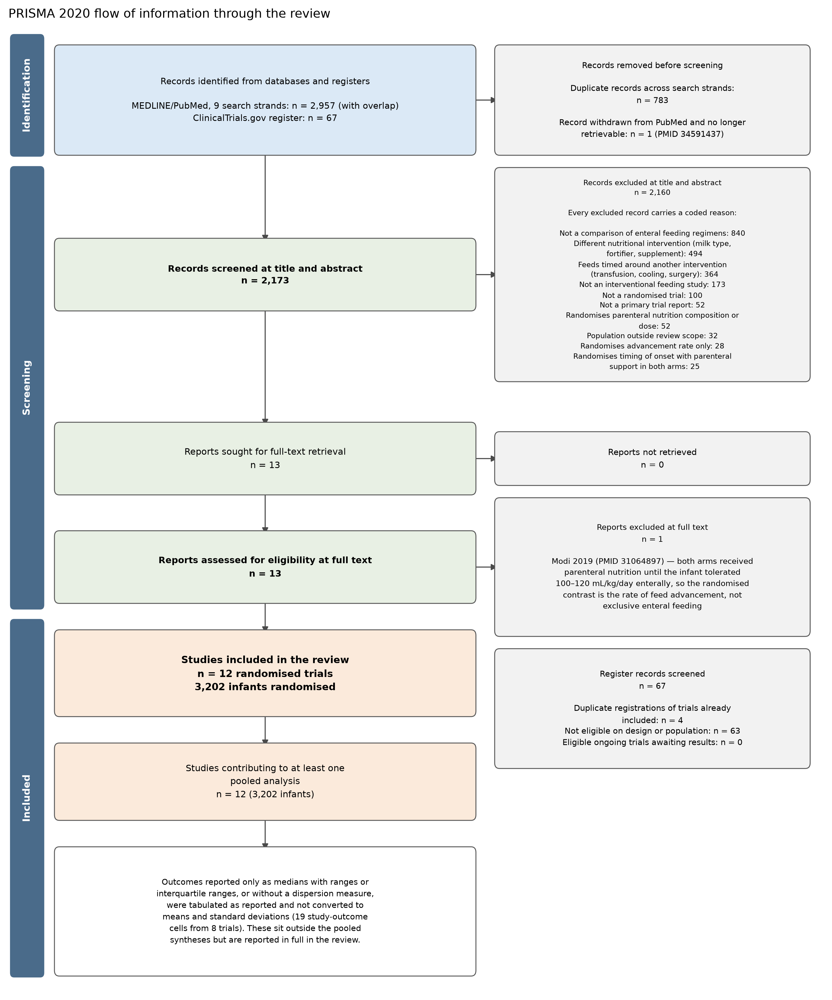
The single full-text exclusion was Modi 2019 (PMID 31064897), in which both arms received parenteral nutrition until the infant tolerated 100 to 120 mL/kg/day enterally, making the randomised contrast the rate of feed advancement rather than exclusive enteral feeding. Of the 67 register records, four were duplicate registrations of trials already included and 63 were not eligible on design or population. On individual adjudication, the near-miss register records comprised a trial of gastric tube management practices in infants already established on full feeds, a trial of day-night cycling on transition time, two duplicate registrations of a single early-versus-late initiation trial in growth-restricted infants with abnormal umbilical artery Doppler, and a probiotic trial beginning after feeds were established. No eligible ongoing trial awaiting results was identified.
Included studies. The 12 included trials randomised 3,202 infants and were published between 2013 and 2026. Eight were conducted in India, and one each in Italy, the USA, Canada and the UK; on World Bank classification, eight are from lower- and middle-income settings and four from high-income settings. Sample sizes ranged from 46 to 2,088 infants: the UK FEED1 trial (Ojha 2025) enrolled 2,088 infants across 46 neonatal units and accounts for 65% of all infants in the review, while the remaining 11 trials are single-centre and enrolled 46 to 183 infants each.
The intervention was consistent across trials — the full daily enteral volume, most often 80 mL/kg/day, from day one with no routine intravenous fluid — but the populations were not. Six trials enrolled very low birth weight infants in the 1,000 to 1,500 g band, two enrolled small-for-gestational-age infants specifically, and the four largest by gestational stratum enrolled moderately preterm infants at 30 to 34 weeks. No trial enrolled infants below 1,000 g as a target population, which is the stratum at highest risk of necrotising enterocolitis and the one in which clinicians are least willing to abandon parenteral support. Comparator regimens ranged from 20 mL/kg/day trophic feeds to "gradual feeding as per local practice", the latter in the largest trial.
Full per-trial detail — population, gestational and weight criteria, exact intervention and comparator volumes, milk type, primary outcome as registered, registration identifier and PMID — is in the study characteristics table.
Risk of bias in included studies
Six of the 12 trials were judged at high overall risk of bias, three at some concerns and three at low risk.
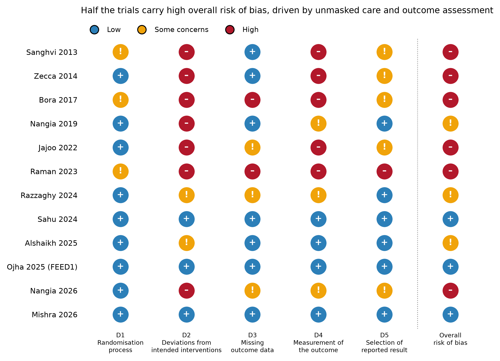
Domain by domain, the randomisation process was adequate in nine trials, with some concerns in three where allocation concealment was not described. Deviations from intended interventions was the weakest domain: seven trials were at high risk, three at low risk and two at some concerns. The intervention is inherently unmaskable, so this judgement turned on whether the trial reported any protection against differential co-intervention — protocolised criteria for withholding feeds, for siting a line, or for escalating care — and most of the smaller trials reported none. Missing outcome data was low risk in seven trials and high in two. Measurement of the outcome was at high risk in five trials, where clinical outcomes such as feed intolerance and necrotising enterocolitis were ascertained by unblinded clinicians; four trials were at low risk, having used objective criteria applied by assessors unaware of allocation. Selection of the reported result was low risk in six trials, with some concerns in five where no prospective registration or protocol could be located, and high risk in one.
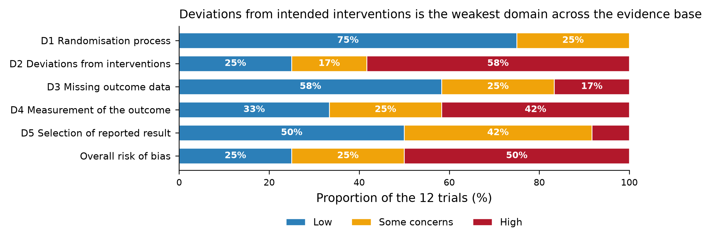
The pattern matters for interpretation because it is not random with respect to trial size or setting. The three trials at low overall risk of bias — Sahu 2024, Ojha 2025 (FEED1) and Mishra 2026 — include the largest trial in the review, so the risk-of-bias sensitivity analysis and the setting subgroup analysis are partly confounded with each other.
Effects of interventions
Primary outcome: necrotising enterocolitis
Eight trials (3,160 infants) reported necrotising enterocolitis of Bell stage 2 or above, with 17 events among 1,584 infants allocated to early exclusive enteral feeding and 21 events among 1,576 controls. The pooled risk ratio was 0.84 (95% CI 0.41 to 1.71; p = 0.64), with negligible heterogeneity (I² = 2%, τ² = 0.017, p = 0.42).
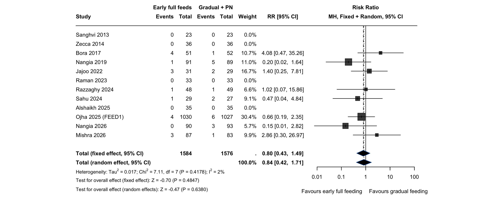
The estimate is compatible with a 59% relative reduction and a 71% relative increase. In absolute terms, against a control risk of 13 per 1,000, the intervention corresponds to 11 per 1,000 (95% CI 6 to 23) — a difference of 2 fewer per 1,000, with an interval spanning 8 fewer to 10 more. With only 38 events in 3,160 infants, this analysis does not settle the safety question that motivates the review; what it does establish is that no signal of harm emerged in trials totalling more than three thousand infants, and that the trials agree with one another.
Primary outcome: all-cause mortality before discharge
Six trials (2,701 infants) reported mortality before discharge: 39 deaths among 1,355 intervention infants and 38 among 1,346 controls. The pooled risk ratio was 1.03 (95% CI 0.68 to 1.54; p = 0.90) with no heterogeneity (I² = 0%, τ² = 0).
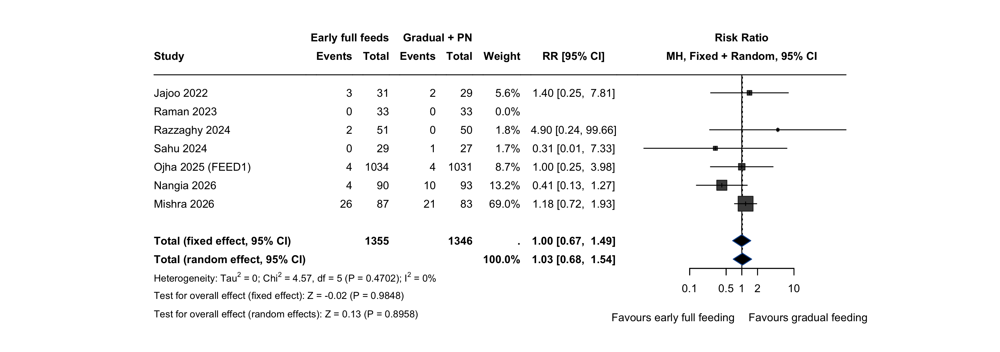
Against a control risk of 28 per 1,000, this corresponds to 29 per 1,000 (95% CI 19 to 44), a difference of 1 more per 1,000 with an interval from 9 fewer to 15 more. The complete absence of heterogeneity across six trials in four countries is the most consistent finding in the review.
Culture-positive late-onset sepsis
Eight trials (2,917 infants) reported culture-positive late-onset sepsis, with 66 events among 1,465 intervention infants and 82 among 1,452 controls. The pooled risk ratio was 0.63 (95% CI 0.35 to 1.15; p = 0.14), with substantial heterogeneity (I² = 50%, τ² = 0.278, p = 0.051).
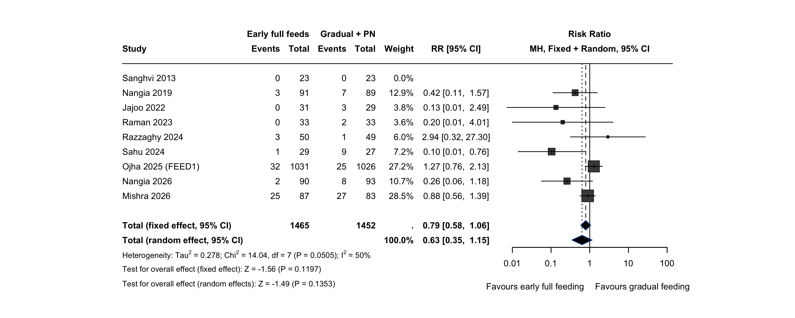
This is the outcome where the pooled estimate is least informative, because the heterogeneity is structured rather than random. Splitting by setting produces a significant interaction (p = 0.011): in the six trials from lower- and middle-income settings the risk ratio was 0.37 (95% CI 0.16 to 0.87, I² = 47%), while in the two high-income trials it was 1.33 (95% CI 0.80 to 2.20, I² = 0%).
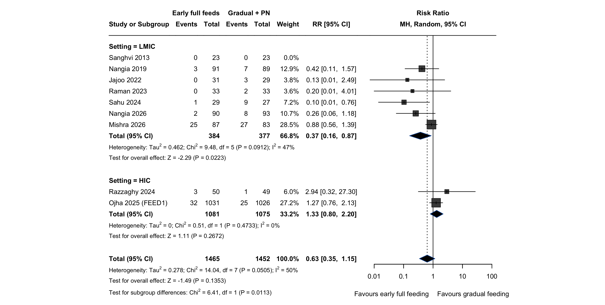
The interpretation that fits the mechanism is that avoiding intravenous access reduces bloodstream infection in proportion to the baseline line-associated infection rate. Where that baseline is high, removing the line yields a large absolute benefit; where line-care bundles have already driven it low, there is little left to remove and the point estimate drifts above unity. The subgroup finding should not be over-read — it rests on six small trials against two, is partly confounded with risk of bias, and the interaction test is exploratory — but it is a more plausible reading of these data than a single pooled risk ratio of 0.63.
Feed intolerance
Ten trials (1,101 infants) reported feed intolerance as defined by each trial, with 104 events among 553 intervention infants and 144 among 548 controls. The pooled risk ratio was 0.72 (95% CI 0.54 to 0.95; p = 0.023), with moderate heterogeneity (I² = 28%, τ² = 0.053, p = 0.19).
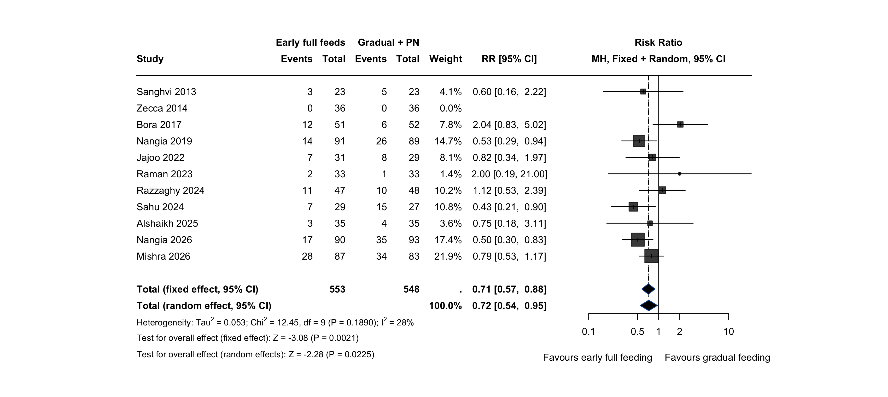
Against a control risk of 263 per 1,000, this corresponds to 189 per 1,000 (95% CI 143 to 251), or 73 fewer infants per 1,000 (95% CI 120 fewer to 12 fewer). This is the only dichotomous outcome with a statistically significant benefit, and it is also the outcome most vulnerable to ascertainment bias, since "feed intolerance" was defined by each trial's own criteria and judged by clinicians who knew the allocation. Notably, the large FEED1 trial did not contribute — this analysis is built entirely from the smaller trials, which is why 1,101 infants appear here against 3,160 for necrotising enterocolitis.
Hypoglycaemia
Six trials (534 infants) reported hypoglycaemia, with 30 events among 270 intervention infants and 39 among 264 controls: risk ratio 0.80 (95% CI 0.37 to 1.75; p = 0.57), I² = 45%.
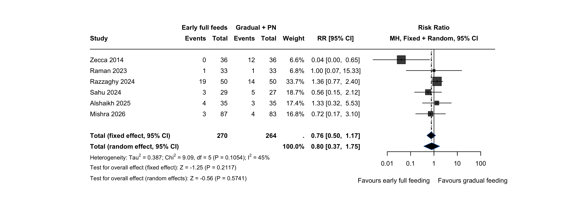
This outcome carries a specific plausibility concern — withholding intravenous dextrose could precipitate hypoglycaemia if enteral intake is not established — and the data neither confirm nor exclude it. The estimate is imprecise, and it reverses direction to RR 1.14 (95% CI 0.72 to 1.81) when the trials at high risk of bias are removed, so no conclusion can be drawn.
Time to attain full enteral feeds
Five trials (2,577 infants) reported time to full enteral feeds as a mean with a standard deviation: mean difference −2.30 days (95% CI −3.47 to −1.14; p = 0.0001), with very high heterogeneity (I² = 90%, τ² = 1.44).
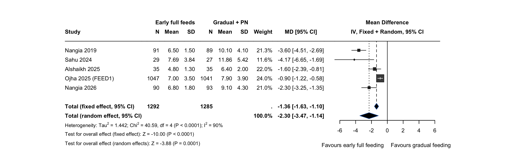
Setting again structures the heterogeneity, with a significant interaction (p = 0.002): −3.14 days (95% CI −4.22 to −2.06) in three lower- and middle-income trials versus −1.15 days (95% CI −1.81 to −0.49) in two high-income trials.
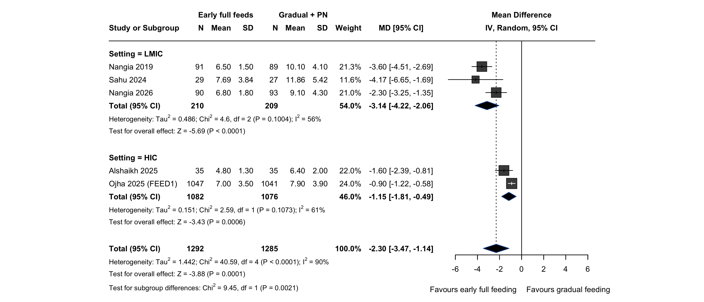
Both subgroups show benefit; they disagree about its size, which is what one would expect if the comparator regimens differ — a 20 mL/kg/day trophic start leaves more room for acceleration than "gradual feeding as per local practice" in a unit already advancing briskly. Three further trials reported this outcome only as medians and are excluded from the pooled estimate.
Duration of hospital stay
Seven trials (2,506 infants) contributed a mean difference of −3.94 days (95% CI −6.40 to −1.49; p = 0.0016), with I² = 90% (τ² = 8.16).
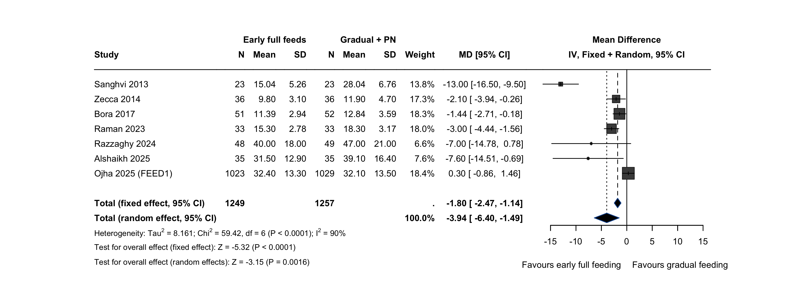
This is the least stable result in the review. The risk-of-bias subgroup analysis produces a highly significant interaction (p = 0.0007): four trials at high risk of bias give −4.43 days (95% CI −7.55 to −1.31), two at some concerns give −7.34 days (95% CI −12.50 to −2.17), and the single trial at low risk of bias — FEED1, with 2,052 of the 2,506 infants — gives +0.30 days (95% CI −0.86 to +1.46), that is, no difference at all.
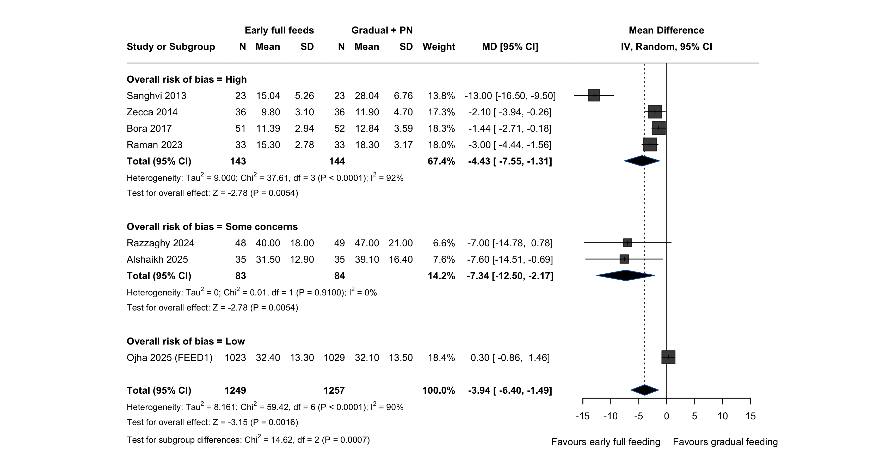
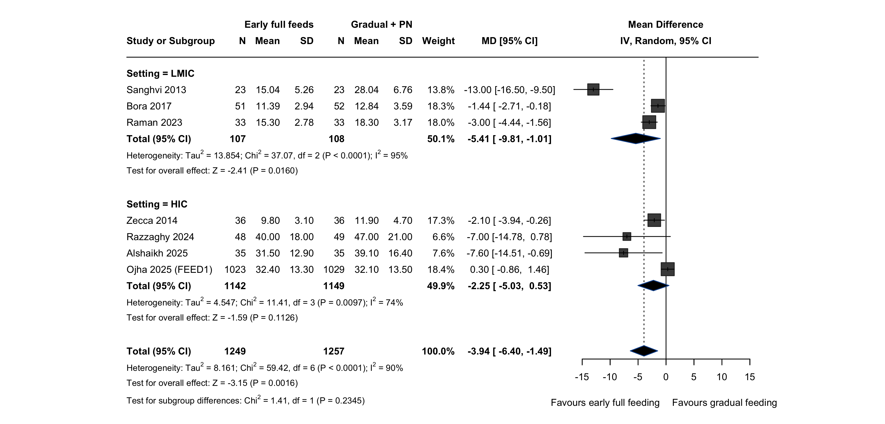
The pooled benefit of nearly four days is therefore generated entirely by small trials at higher risk of bias, and is contradicted by the one large trial at low risk of bias that contributes 82% of the participants. A random-effects model, which by design down-weights the large trial relative to its precision, reports a significant benefit that the evidence does not support once the structure of the data is examined. Length of stay in a preterm infant is determined predominantly by gestational maturation, discharge criteria and local capacity — factors a feeding regimen influences only at the margin — so the null result from the large multicentre trial is also the more mechanistically plausible one.
Time to regain birth weight
Five trials (347 infants) gave a mean difference of −2.82 days (95% CI −5.12 to −0.53; p = 0.016), with I² = 94%.
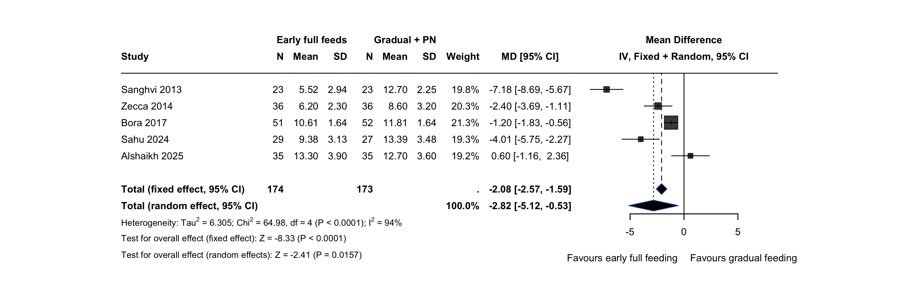
The risk-of-bias interaction is again significant (p = 0.0008), with the one trial at some concerns showing no effect (+0.60 days, 95% CI −1.16 to +2.36) against benefit in the high-risk trials.
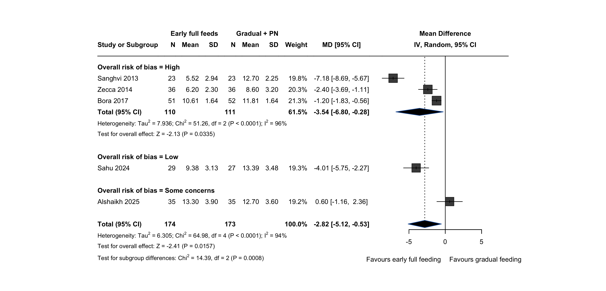
With 347 infants, I² of 94% and a significant interaction with risk of bias, this estimate should be treated as hypothesis-generating.
Subgroup analyses
Twenty-two subgroup rows across the two pre-specified variables are reported in the accompanying subgroup table. Three interaction tests reached significance: setting for culture-positive late-onset sepsis (p = 0.011) and for time to full enteral feeds (p = 0.002), and risk of bias for duration of hospital stay (p = 0.0007) and time to regain birth weight (p = 0.0008). No interaction was detected for either primary outcome, on either variable.
The two subgroup variables are substantially confounded: the three trials at low overall risk of bias are drawn from the high-income and larger-trial end of the evidence base. The subgroup findings should therefore be read as one signal — that the small, higher-risk trials from lower- and middle-income settings report larger benefits than the large, lower-risk trials from high-income settings — rather than as two independent effect modifiers.
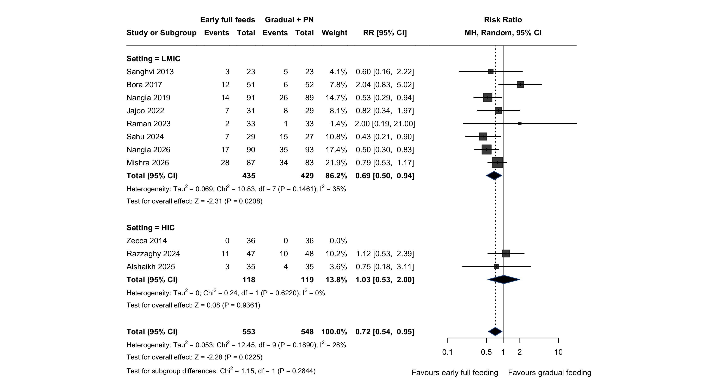
Sensitivity analyses
The full text of all six sensitivity analyses accompanies this review. The findings that bear on interpretation are these.
Model choice. Fixed-effect and random-effects estimates agree for the dichotomous outcomes. For the continuous outcomes they diverge, as expected given I² around 90%.
Excluding trials at high risk of bias. With the six high-risk trials removed, feed intolerance retains significance and its heterogeneity falls to 9% (RR 0.69, 95% CI 0.51 to 0.92), and time to full feeds retains significance (MD −2.34 days, 95% CI −3.76 to −0.91). Duration of hospital stay loses significance (MD −3.90 days, 95% CI −10.05 to +2.24, k = 3) and so does time to regain birth weight (MD −1.71 days, 95% CI −6.22 to +2.81, k = 2), though with three and two trials remaining this reflects loss of precision as much as bias. Hypoglycaemia reverses direction (RR 1.14, 95% CI 0.72 to 1.81). Neither primary outcome changes materially.
Hartung-Knapp small-sample intervals. Under REML with the Hartung-Knapp adjustment — the preferred approach when between-trial variance is large and the number of trials small, which describes several of these analyses — the time-to-full-feeds benefit persists (MD −2.29 days, 95% CI −3.90 to −0.69), but duration of hospital stay becomes marginal (p = 0.049), and feed intolerance (p = 0.053) and time to regain birth weight (p = 0.098) both cross unity. The feed intolerance result — the review's headline dichotomous benefit — is therefore not robust to a defensible alternative interval method.
Small-study effects. No asymmetry test reached significance. Only feed intolerance has the 10 trials that Cochrane guidance sets as the minimum for such testing; for that outcome Egger's test gives p = 0.37 and, when trim-and-fill imputes two hypothetical missing trials, the estimate moves away from the null (RR 0.65, 95% CI 0.47 to 0.90) rather than towards it, so the observed effect is not obviously an artefact of missing small negative trials.
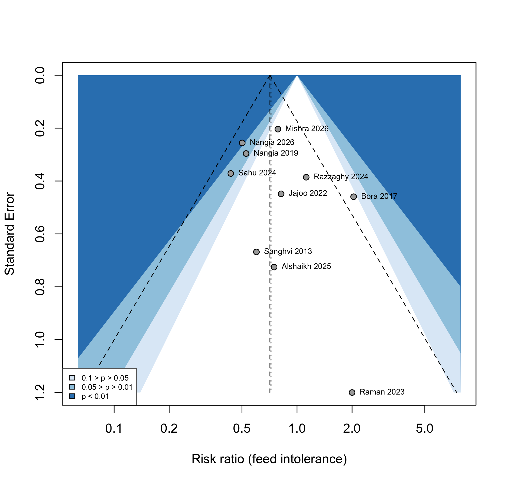
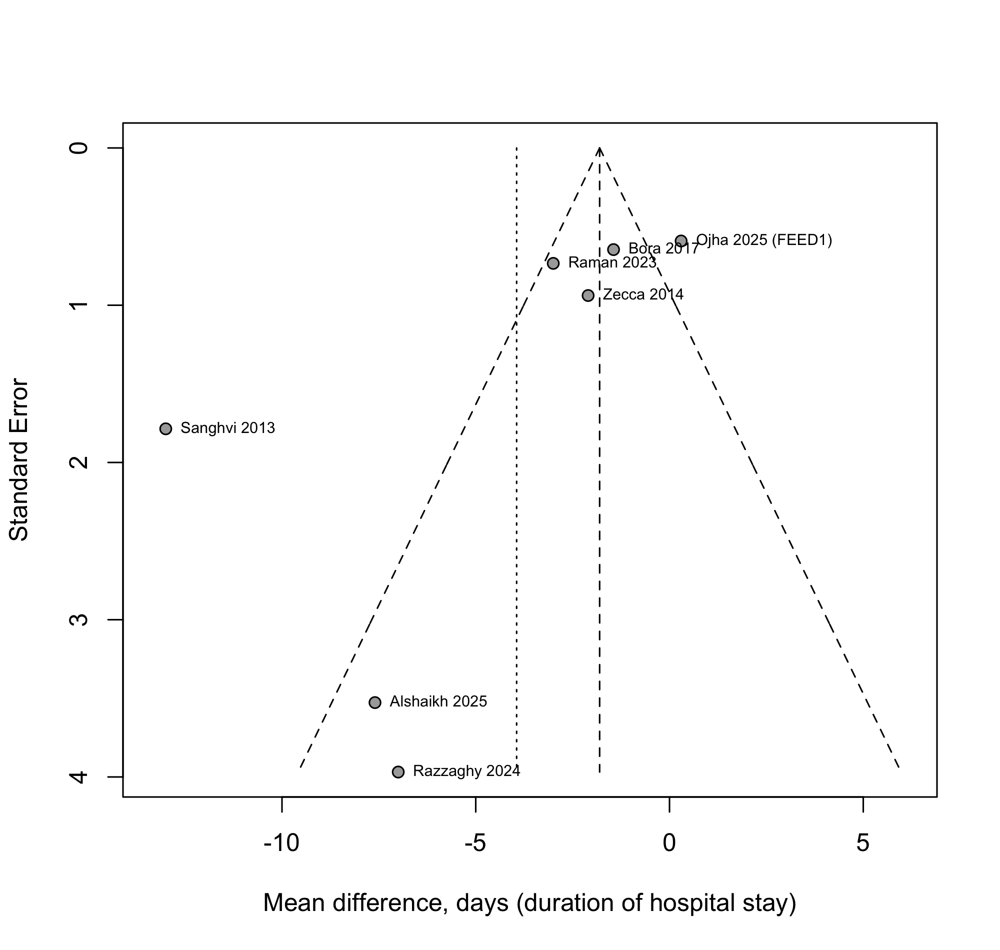
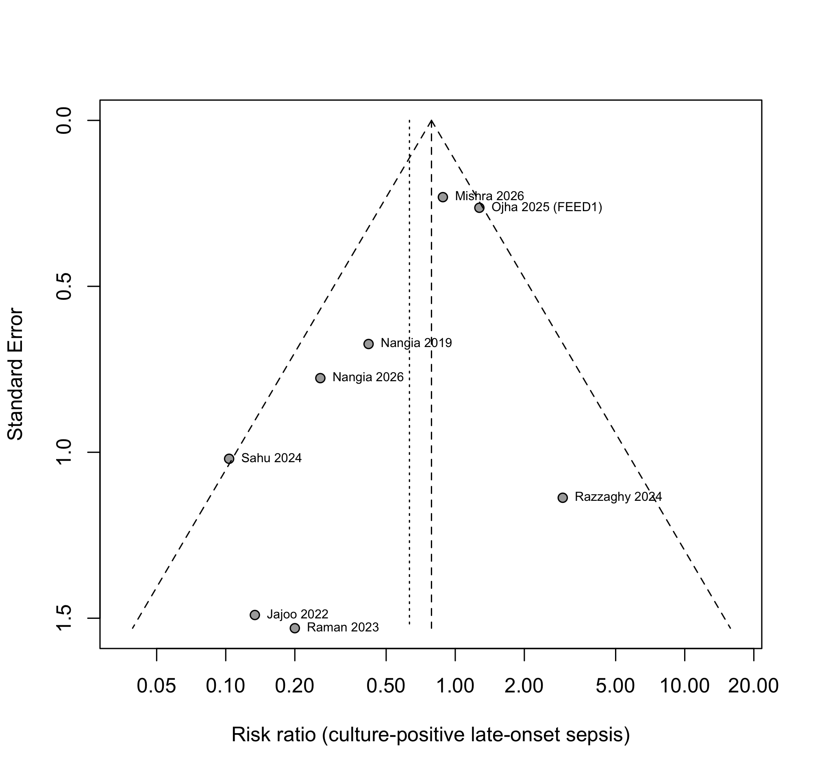
Visual inspection shows the small trials from lower-income settings clustered towards larger benefit for the feeding-progression outcomes — the same signal the setting subgroup analysis captures — and Sanghvi 2013 sitting far outside the funnel for length of stay. Publication bias cannot be excluded for any outcome, since most trials are small, single-centre and from a small number of research groups.
Summary of findings
Early exclusive (total) enteral feeding compared with gradual enteral feeding plus intravenous fluids or parenteral nutrition in preterm and low birth weight infants
Population: preterm (< 37 weeks) or low birth weight (< 2,500 g) infants, clinically stable, enrolled in the first days of life. Setting: neonatal units in India, Italy, USA, Canada and the UK. Intervention: full daily enteral volume (usually 80 mL/kg/day) from day 1, no routine intravenous fluid or parenteral nutrition. Comparison: trophic or graded enteral feeds (20 to 30 mL/kg/day) with intravenous fluid or parenteral nutrition.
| Outcome | Participants (trials) | Relative effect (95% CI) | Control risk | Risk with intervention | Absolute difference | Certainty |
|---|---|---|---|---|---|---|
| Necrotising enterocolitis (Bell stage ≥2) | 3,160 infants (8 RCTs) | RR 0.84 (95% CI 0.41 to 1.71) | 13 per 1,000 | 11 per 1,000 (95% CI 6 to 23) | -2 per 1,000 (95% CI -8 to +10) | ⊕○○○ Very low |
| All-cause mortality before discharge | 2,701 infants (6 RCTs) | RR 1.03 (95% CI 0.68 to 1.54) | 28 per 1,000 | 29 per 1,000 (95% CI 19 to 44) | +1 per 1,000 (95% CI -9 to +15) | ⊕⊕○○ Low |
| Culture-positive late-onset sepsis | 2,917 infants (8 RCTs) | RR 0.63 (95% CI 0.35 to 1.15) | 56 per 1,000 | 36 per 1,000 (95% CI 20 to 65) | -21 per 1,000 (95% CI -37 to +9) | ⊕○○○ Very low |
| Feed intolerance | 1,101 infants (10 RCTs) | RR 0.72 (95% CI 0.54 to 0.95) | 263 per 1,000 | 189 per 1,000 (95% CI 143 to 251) | -73 per 1,000 (95% CI -120 to -12) | ⊕⊕○○ Low |
| Hypoglycaemia | 534 infants (6 RCTs) | RR 0.80 (95% CI 0.37 to 1.75) | 148 per 1,000 | 118 per 1,000 (95% CI 54 to 258) | -30 per 1,000 (95% CI -94 to +110) | ⊕○○○ Very low |
| Duration of hospital stay (days) | 2,506 infants (7 RCTs) | MD -3.94 days (95% CI -6.40 to -1.49) | mean 31.1 days | mean 27.1 days (95% CI 24.7 to 29.6) | MD -3.94 days (95% CI -6.40 to -1.49) | ⊕○○○ Very low |
| Time to attain full enteral feeds (days) | 2,577 infants (5 RCTs) | MD -2.30 days (95% CI -3.47 to -1.14) | mean 8.2 days | mean 5.9 days (95% CI 4.7 to 7.0) | MD -2.30 days (95% CI -3.47 to -1.14) | ⊕○○○ Very low |
| Time to regain birth weight (days) | 347 infants (5 RCTs) | MD -2.82 days (95% CI -5.12 to -0.53) | mean 11.7 days | mean 8.9 days (95% CI 6.6 to 11.2) | MD -2.82 days (95% CI -5.12 to -0.53) | ⊕○○○ Very low |
⊕⊕⊕⊕ high · ⊕⊕⊕◯ moderate · ⊕⊕◯◯ low · ⊕◯◯◯ very low
GRADE judgements. Every outcome was downgraded for risk of bias, since six of 12 trials are at high overall risk and the unmaskable intervention makes clinician-ascertained outcomes — feed intolerance and necrotising enterocolitis in particular — susceptible to differential ascertainment. Both primary outcomes were downgraded twice for imprecision: 38 necrotising enterocolitis events and 77 deaths across the whole evidence base leave intervals that include appreciable benefit and appreciable harm. The three continuous outcomes and sepsis were downgraded for inconsistency (I² of 50 to 94% with significant subgroup interactions). Length of stay was downgraded additionally because the pooled benefit is contradicted by the single large trial at low risk of bias. Publication bias was not detected on formal testing but could not be excluded for any outcome. Full per-domain rationale for each of the eight outcomes, in prose, is in the summary-of-findings table.
The net result is that no outcome in this review reaches moderate certainty. Mortality and feed intolerance are low certainty; the remaining six are very low.
Discussion
Summary of main results
Twelve randomised trials in 3,202 preterm and low birth weight infants provide no evidence that feeding the full enteral volume from day one increases necrotising enterocolitis (RR 0.84, 95% CI 0.41 to 1.71) or death before discharge (RR 1.03, 95% CI 0.68 to 1.54). Both estimates are homogeneous across trials and settings, which is reassuring; both are also imprecise enough that a clinically important effect in either direction remains possible.
The benefits are of two kinds, and they should be weighted differently. Feed intolerance is reduced (RR 0.72, 95% CI 0.54 to 0.95) and time to full enteral feeds is shortened by about 2.3 days, and both findings survive removal of the high-risk trials — although the feed intolerance interval crosses unity under Hartung-Knapp intervals, and the outcome definition is trial-specific and clinician-judged. Against that, the apparent four-day reduction in hospital stay does not survive scrutiny: it is generated by small trials at higher risk of bias and directly contradicted by FEED1, which contributes 82% of the participants to that analysis and found no difference whatever (+0.30 days, 95% CI −0.86 to +1.46). A reviewer reading only the pooled forest plot would reach the wrong conclusion about length of stay.
The sepsis result is the review's most interesting signal. The pooled estimate is non-significant, but the setting interaction is significant and mechanistically coherent: avoiding an intravenous line reduces bloodstream infection where line-associated infection is common (RR 0.37 in lower- and middle-income settings) and does nothing where it is already rare (RR 1.33 in high-income settings). If that reading is right, the pooled figure is the least useful number in the analysis, and the benefit of this intervention depends on the baseline risk of the unit adopting it.
Overall completeness and applicability of evidence
Three gaps limit applicability. First, no trial targeted infants below 1,000 g, the group at highest risk of necrotising enterocolitis and the group for whom the decision to withhold parenteral nutrition is hardest. The review is silent about them, and its reassuring safety findings should not be extrapolated to them. Second, the evidence base is geographically concentrated: eight of 12 trials are from India, and the comparator in those trials — 20 mL/kg/day trophic feeds — differs from the brisker "local practice" comparator in the large high-income trial, so the two bodies of evidence are testing somewhat different contrasts. Third, no trial reported neurodevelopmental follow-up, growth beyond discharge, or cholestasis, so the medium-term consequences of either regimen are unaddressed.
Quality of the evidence
Certainty is low for two outcomes and very low for six, and the reasons are structural rather than incidental. The intervention cannot be blinded, so clinician-ascertained outcomes will always carry ascertainment risk; the event rates for the primary outcomes are low enough that even 3,000 infants yield wide intervals; and the trials are heterogeneous in population, comparator and setting in ways that a random-effects model absorbs into τ² without resolving. Increasing certainty would require large trials with protocolised, allocation-blind outcome ascertainment — the FEED1 design — rather than more small single-centre trials.
Potential biases in the review process
Two deviations from Cochrane standard are declared above and bear repeating here. The search could not reach CENTRAL, Embase or regional databases including LILACS and IMSEAR; for a literature this heavily South Asian, that is a material risk of missed trials. Screening was single-reviewer with machine assistance rather than dual independent. Both raise the possibility of missed eligible trials, and the direction of any resulting bias is unknown.
The decision not to convert medians to means removed 19 study-outcome cells from eight trials from the syntheses. This is conservative — it avoids manufacturing precision from skewed data — but it means the continuous analyses rest on fewer trials than reported the outcomes, and it is possible that the excluded median-reported results differ systematically from the mean-reported ones.
Agreements and disagreements with other studies or reviews
This review deliberately excludes the two adjacent trial families — advancement rate and timing of onset — that existing reviews of neonatal feeding cover, so its estimates are not directly comparable with theirs. The general conclusion is nonetheless concordant with that literature: across the whole range of feeding-liberalisation questions, faster or earlier or fuller feeding has repeatedly failed to produce the increase in necrotising enterocolitis that cautious practice was designed to prevent, while producing modest gains in feeding progression. The present review's specific contribution is that the same holds when parenteral support is removed entirely, and that the infection benefit — the strongest theoretical argument for the intervention — appears to be conditional on the recipient unit's baseline infection rate.
Authors' conclusions
Implications for practice
In clinically stable preterm infants above approximately 1,000 g, early exclusive enteral feeding shortens the interval to full enteral nutrition by about two days and reduces feed intolerance, with no demonstrated increase in necrotising enterocolitis or mortality across 3,200 randomised infants. Certainty is low to very low, and the necrotising enterocolitis interval still admits an appreciable relative increase, so the practice is better described as reasonable and supportable than as established. Units with high baseline rates of line-associated bloodstream infection, or without reliable access to parenteral nutrition, have the strongest case for adopting it, since that is where the infection benefit was observed. Units in high-income settings should not expect the shorter hospital stay reported in the pooled analysis, which the largest and least biased trial did not find. The intervention should not be extrapolated to infants below 1,000 g, in whom it has not been tested.
Implications for research
The priority is a trial in infants below 1,000 g, adequately powered for necrotising enterocolitis. Its design should follow FEED1 in using protocolised, allocation-blind ascertainment of necrotising enterocolitis and feed intolerance, since these are the outcomes most vulnerable to bias in an unmaskable intervention and the ones on which practice will turn. Future trials should also report outcomes as means with standard deviations in addition to medians, so that they can contribute to synthesis, and should include cholestasis, growth to discharge and neurodevelopmental follow-up, none of which the current evidence base addresses. Given the observed setting interaction, trials in high- and low-baseline-infection settings answer different practical questions and both remain worth doing.
Data and code availability
Every number in this review is traceable to a source file, and every extracted data cell carries a source field naming the table, page or figure in the original publication from which it was taken.
| File | Contents |
|---|---|
| protocol_etef.md | Pre-specified protocol: PICO, outcomes, analysis plan, declared deviations |
| search_strategy.md | Full Boolean strings for all nine strands, per-strand yields, search dates |
| screening_log.csv | All 2,173 screened records with PMID, decision and coded reason |
| table_excluded_studies.csv | Studies excluded at full text with PMIDs and stated grounds |
| prisma_flow_counts.csv | Stage-by-stage counts underlying the PRISMA diagram |
| table1_study_characteristics.csv | Per-trial population, intervention, comparator, outcomes, registration |
| table2_risk_of_bias.csv | RoB 2 judgements with written support for each domain |
| table3_summary_of_findings.csv | GRADE summary of findings with per-domain rationale |
| extracted_data_binary.csv | Arm-level event counts with per-cell source fields |
| extracted_data_continuous.csv | Arm-level means and SDs with per-cell source fields |
| extracted_data_nonpoolable.csv | The 19 median-reported or subset-reported cells, with reasons |
| pooled_results.csv | Fixed and random-effects estimates, heterogeneity statistics |
| subgroup_analyses.csv | 22 subgroup rows with interaction tests |
| sensitivity_analyses.txt | All six sensitivity analyses in full |
| fulltext_request_list.csv | Full-text retrieval status per report |
Analyses were run in R with the meta package (Mantel-Haenszel risk ratios, DerSimonian-Laird random effects), with REML and Hartung-Knapp as sensitivity specifications.
Characteristics of included studies
Sanghvi 2013 — India (LMIC), n = 46 (23 intervention / 23 control). PMID 23621289; registration CTRI/2012/04/002570. Participants: Haemodynamically stable inborn VLBW 1200-1500 g, <24 h. Intervention: Exclusive enteral feeds from birth, 80 mL/kg/day day 1, no parenteral fluids. Comparator: Conventional feeds 20 mL/kg/day day 1 plus intravenous fluids. Trial's primary outcome: Feasibility: time to full feeds / feed intolerance. Overall risk of bias: High.
Zecca 2014 — Italy (HIC), n = 72 (36 intervention / 36 control). PMID 25304922; registration UMIN000004225. Participants: Moderately preterm (32-36 wk) SGA infants. Intervention: Proactive feeding regimen: full enteral volumes from day 1. Comparator: Standard feeding regimen with intravenous fluids. Trial's primary outcome: Length of hospital stay. Overall risk of bias: High.
Bora 2017 — India (LMIC), n = 103 (51 intervention / 52 control). PMID 27809613; registration not reported. Participants: Stable VLBW 1000-1500 g within 24 h of life. Intervention: Complete enteral feed 80 mL/kg/day from first hour, no parenteral nutrition. Comparator: Minimal enteral feed with intravenous fluid supplementation. Trial's primary outcome: Feed intolerance and NEC. Overall risk of bias: High.
Nangia 2019 — India (LMIC), n = 180 (91 intervention / 89 control). PMID 30699425; registration NCT02187978. Participants: Stable inborn preterm VLBW 1000-1499 g, 28-34 wk. Intervention: Early total enteral feeding 80 mL/kg/day day 1, no intravenous fluids. Comparator: Conventional enteral feeding 20 mL/kg/day day 1 plus intravenous fluids. Trial's primary outcome: Postnatal age at attaining full enteral feeds. Overall risk of bias: Some concerns.
Jajoo 2022 — India (LMIC), n = 60 (31 intervention / 29 control). PMID 34117622; registration not reported. Participants: Haemodynamically stable outborn preterm 29-33 wk, VLBW 1000-1499 g. Intervention: Early total enteral nutrition 80 mL/kg/day from admission. Comparator: Gradual advancement with intravenous fluids. Trial's primary outcome: Time to full enteral nutrition. Overall risk of bias: High.
Raman 2023 — India (LMIC), n = 66 (33 intervention / 33 control). PMID 37288401; registration not reported. Participants: Haemodynamically stable VLBW neonates. Intervention: Full enteral feeding from first day of life. Comparator: Partial enteral feeding with partial parenteral nutrition. Trial's primary outcome: Rate of weight gain. Overall risk of bias: High.
Razzaghy 2024 — USA (HIC), n = 102 (51 intervention / 51 control). PMID 38135494; registration NCT04337710. Participants: Infants 28+0 to 32+6 wk admitted within 36 h. Intervention: Early and exclusive enteral nutrition 60-80 mL/kg/day within 36 h (maternal or donor milk). Comparator: Standard trophic feeding 20-30 mL/kg/day with parenteral fluids. Trial's primary outcome: Number of full enteral feeding days (>=150 mL/kg/day) in first 28 days. Overall risk of bias: Some concerns.
Sahu 2024 — India (LMIC), n = 62 (31 intervention / 31 control). PMID 38640177; registration CTRI/2021/03/031643. Participants: SGA VLBW infants >=32 wk, stable, randomised within 2 h. Intervention: Early total enteral feeding within first 2 h of life (MOM/DHM). Comparator: Incremental feeding per standardised protocol with intravenous fluids. Trial's primary outcome: Duration of hospital stay. Overall risk of bias: Low.
Alshaikh 2025 — Canada (HIC), n = 70 (35 intervention / 35 control). PMID 39894877; registration NCT03708068. Participants: Infants 30+0 to 33+6 wk gestation. Intervention: Early exclusive enteral feeding 60-80 mL/kg/day. Comparator: Conventional feeding 20-30 mL/kg/day with intravenous fluids. Trial's primary outcome: Time to achieve full enteral feeds. Overall risk of bias: Some concerns.
Ojha 2025 (FEED1) — UK (HIC), n = 2088 (1047 intervention / 1041 control). PMID 41115446; registration ISRCTN89654042. Participants: Infants 30+0 to 32+6 wk gestation, 46 neonatal units. Intervention: Full milk feeds from day 1 (no routine intravenous fluids/PN). Comparator: Gradual feeding as per local practice with intravenous fluids or PN. Trial's primary outcome: Length of hospital stay. Overall risk of bias: Low.
Nangia 2026 — India (LMIC), n = 183 (90 intervention / 93 control). PMID 42308132; registration not reported in text. Participants: Sick preterm 27-32 wk, including those needing respiratory support. Intervention: Early total enteral feeding 80 mL/kg/day from day 1. Comparator: Conventional enteral feeding with intravenous fluids. Trial's primary outcome: Day of attainment of full feeds. Overall risk of bias: High.
Mishra 2026 — India (LMIC), n = 170 (87 intervention / 83 control). PMID 42593689; registration CTRI/2022/09/045974. Participants: Inborn preterm <=34 wk, birth weight 1000-1250 g. Intervention: Early total enteral feeding 80 mL/kg/day from day 1 (all received DHM + probiotics). Comparator: Conventional incremental feeding with intravenous fluid therapy. Trial's primary outcome: Time to attain full enteral feeds. Overall risk of bias: Low.
Characteristics of excluded studies
Studies excluded after full-text assessment, and the coded reasons applied to the wider screened set, are listed in full in the accompanying exclusion table. The single study excluded after full-text retrieval was:
Modi 2019 (PMID 31064897) — both arms received parenteral nutrition until the infant tolerated 100 to 120 mL/kg/day enterally. The randomised contrast is the rate of enteral advancement, not the avoidance of parenteral support, placing the trial in a different review's scope.